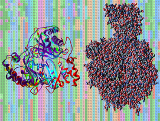

Inscripciones abiertas
Bioinformática, Biología Computacional y Genómica
Profesor responsable: Dr. Arjen ten Have mail
JTP: Dr. Fernando Villarreal mail
Una introducción al análisis computacional de datos biológicos en la era de la genómica. A partir de un proyecto de secuenciación, vas a aprender a utilizar herramientas bioinformáticas clave para explorar genes, proteínas y relaciones evolutivas. El curso combina conceptos teóricos con trabajos prácticos en Linux y análisis de secuencias reales. Más que memorizar herramientas, el objetivo es comprender cómo funcionan y desarrollar una forma crítica e independiente de abordar problemas biológicos complejos.
